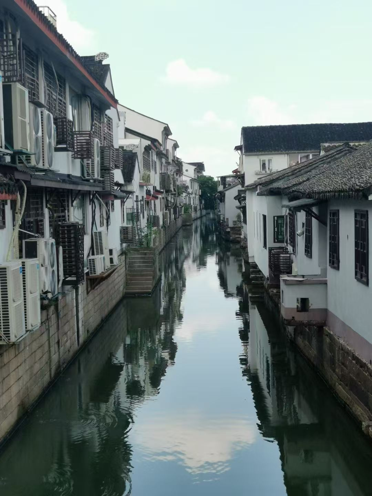
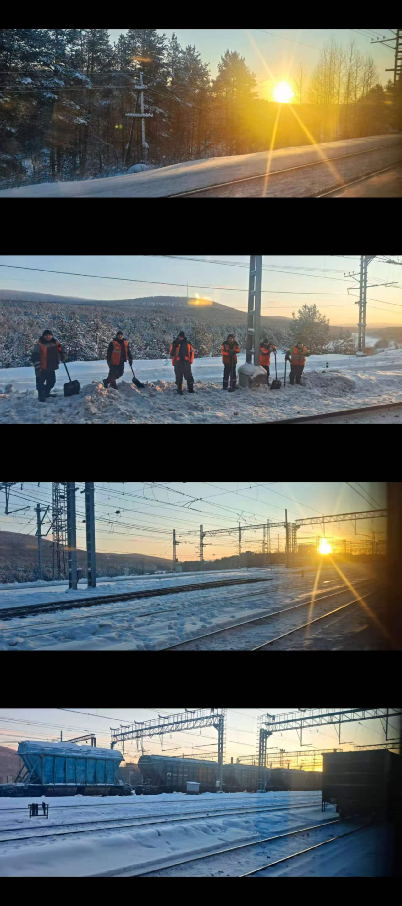
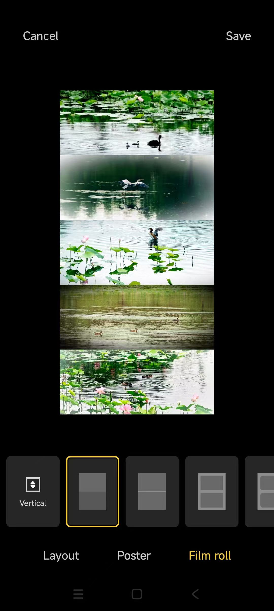
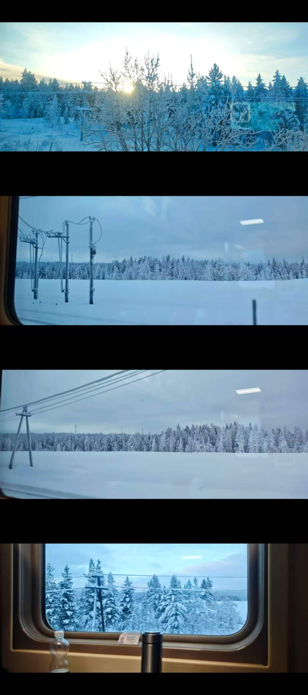
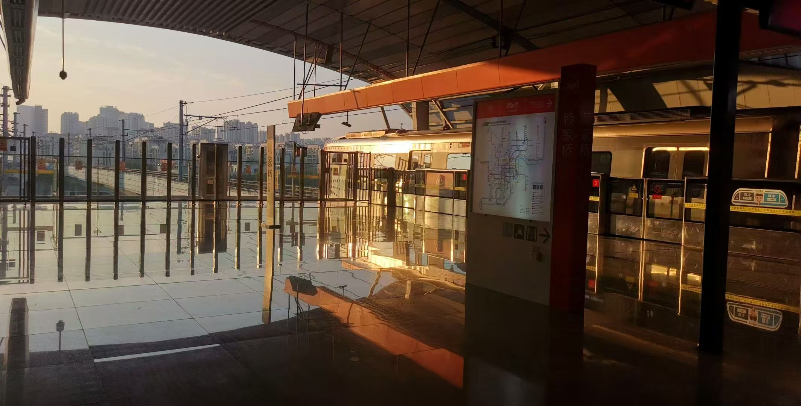
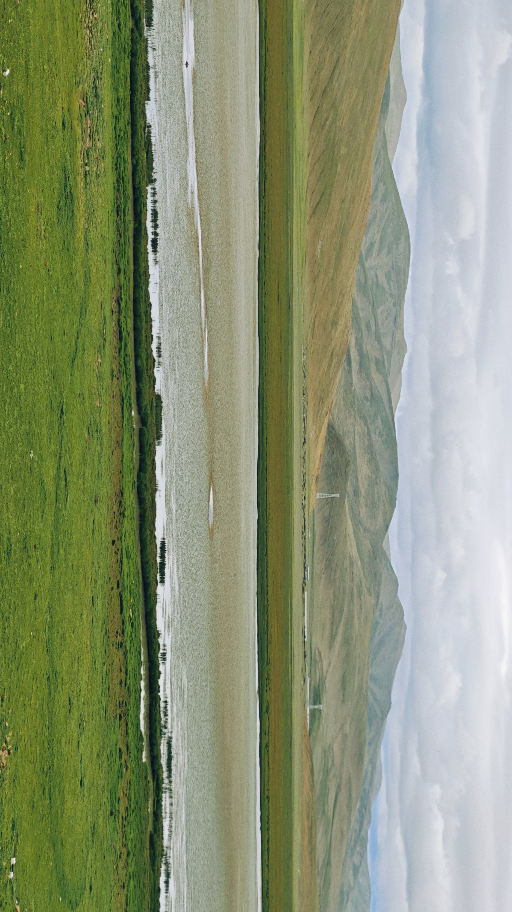
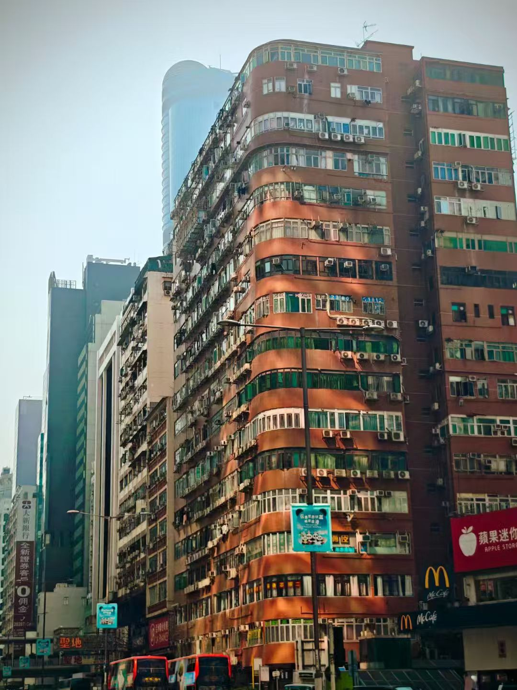
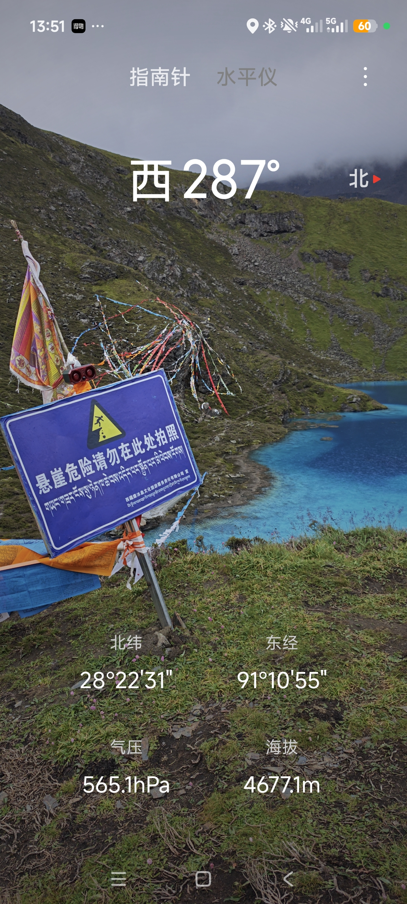

01 / 05
写给远方
TO：嘉嘉
很高兴今天收到你这封跨越山海、来自远方的信。
想来想去，我也想用书信这样一种特别的方式，认真回馈这份心意。
转眼我们已经相识 16 个月了。时光匆匆，一晃便走到了现在。

02 / 05
彼此映照
当初因为主持相识，虽同在重庆，却身处不同校园，平日里也没有太多机会见面。人和人之间，本就是在彼此映照、彼此学习的。
而在你身上，我真切看见了那份难得的洒脱与勇敢。


03 / 05
旷野与风雪
大多数人没有勇气独自奔赴远方，而你，一个人走过许多座城市，踏过北京的街巷，奔赴西藏的旷野，也远赴俄罗斯感受异国的风雪。
看你朋友圈记录下一路的所见所思，那些山川、落日，还有你内心的纠结与清醒，我都看在眼里，也由衷地佩服。
读你寄来的明信片，字里行间都是真诚。
你一直在路上，看遍世间风景，也不断与内心的自己对话。

04 / 05
善待自己
我知道，旅途不会永远浪漫。路上也会有疲惫、迷茫，会有情绪低落的时候。
所以我更希望你在向外奔赴、热烈拥抱世界的同时，也能够好好善待自己。

不必事事都逼着自己变得强大。
允许自己偶尔脆弱，也允许脚步慢一点。
人生并不是一场必须时刻向前的竞赛。
有时候，停下来看看沿途的风景，也是一种抵达。

05 / 05
所见皆辽阔

愿平安常伴，万事顺意。
From：天宇
2026.08.24
